Um projeto indie brasileiro em desenvolvimento, testado diretamente no navegador e ajustado versão por versão.
CroakFall
Vila do Sol
Jornada
0:00 / 1:40
- Vila
- Campos
- Floresta
- Castelo
Pontos000
Recorde000
Fase1/4
Ritmo1.10x
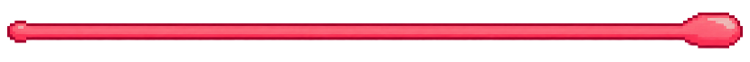
Chefã · Super Abelha
5/5
Fase 1
Vila do Sol
Rota da Manhã
Preparando a trilha
Separando os obstáculos para uma partida justa...
Corra, salte e não deixe os insetos passarem
CroakFall
BetaMenu principal
Por trás do jogo
Créditos
Cada cenário, personagem e mecânica continua sendo revisto e ajustado durante o desenvolvimento.
Seleção de modo
Modos de jogo
Modo história
Diários de jornada
Escolha um viajante para continuar ou abra um diário novo.
Os personagens e seus progressos ficam guardados somente neste aparelho.
Novo diário
Crie seu viajante
Escolha o nome, as cores e o tipo de desafio do seu personagem.
Modo história
Mundo de CroakFall
Explore a mata com as setas ou toque no mapa. As três primeiras fases são liberadas em sequência.
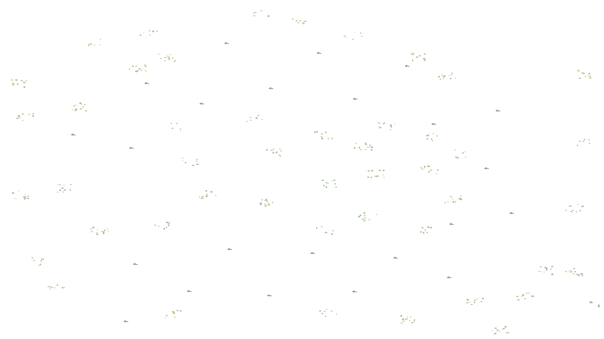
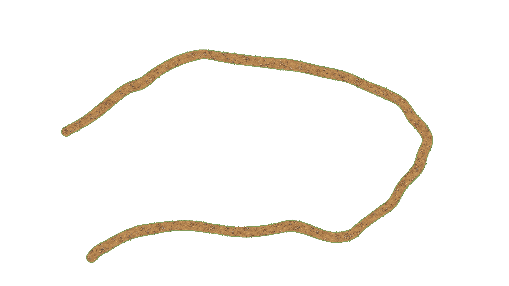
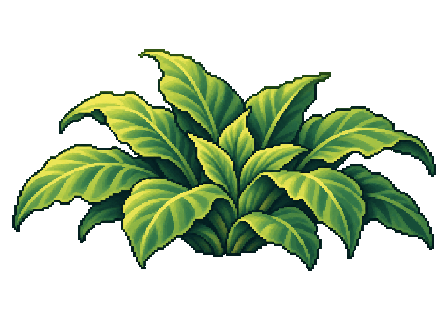
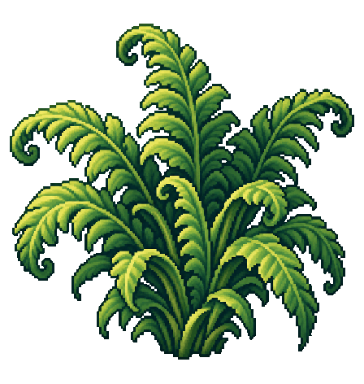
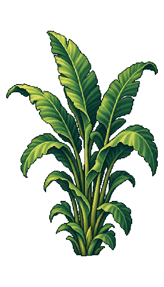
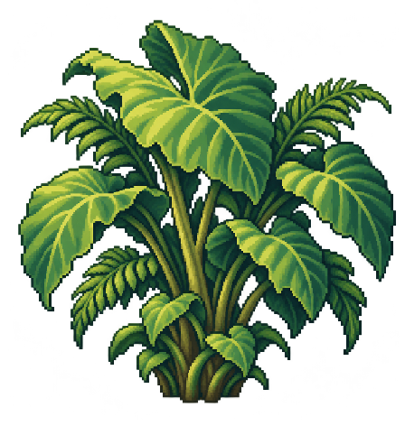
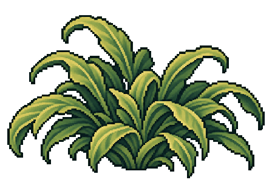
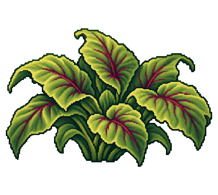
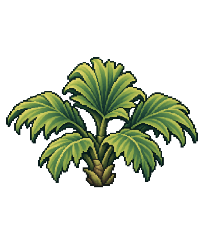
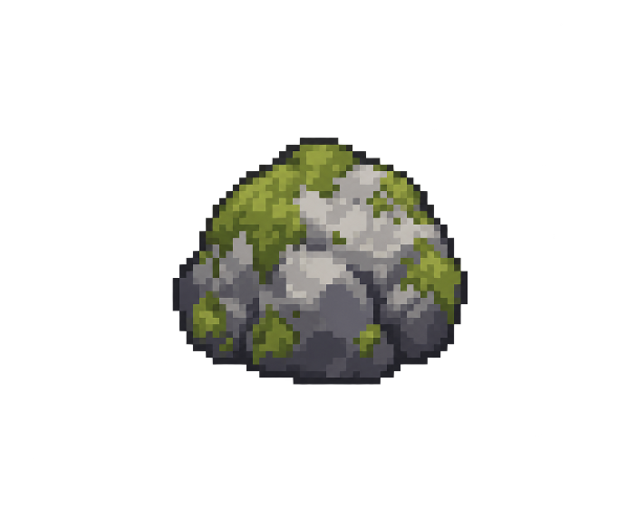
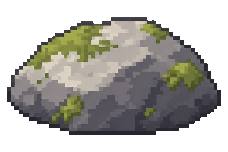
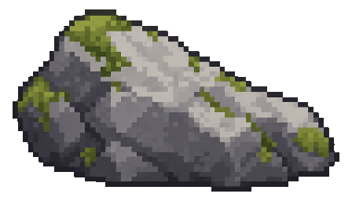
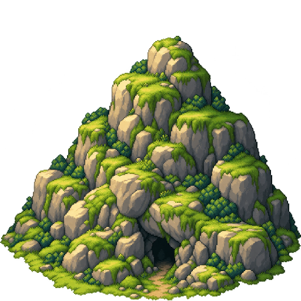
⚒ Fases 4 a 6 ainda estão em construção
Fase encontrada
Rota da Manhã
Categoria · Corrida
Preparando o mapa...
Laboratório temporário
Batalha da Super Abelha
Comece diretamente na chefã para testar os cinco golpes, as abelhas invocadas e a investida especial do ferrão.
- Acerte somente quando ela estiver cansada e voando baixo.
- Depois do terceiro golpe, pule para escapar da investida.
Identidade do viajante
Perfil
Seu nome funciona offline e fica salvo somente neste aparelho.
⌁
Conta Natanashi
Entrar na conta
Contas comuns ainda não salvam dados na internet. O acesso administrativo existe somente para testar fases e estados do mapa neste aparelho.
ADMIN
Modo de testes ativoO bloco de comando está disponível no mapa.
Arquivo da Rota da Manhã
Museu da Mata
Registros dos bichos desta mata: onde aparecem, como atacam e como o sapo pode reagir.
- Besouro-douradoInseto voador · capturável
Viaja sozinho ou em pequenos bandos. Surge em linhas altas e baixas; a língua alcança o grupo durante o voo.
- Besouro-ondulanteInseto voador · hostil e capturável
Alterna altura em ondas e zigue-zagues. Pode descer perto da trilha, exigindo pulo, agachamento ou uma linguada precisa.
- Besouro-terrestreCorredor do solo · obstáculo
Corre rente ao chão e não pode ser engolido. Aparece entre pedras e trechos livres, deixando uma janela segura para o salto.
- Besouro-saltadorCaçador terrestre · obstáculo
Menor e mais rápido, aproxima-se antes de saltar na direção do sapinho. O movimento é anunciado pela curta preparação das pernas.
- Abelha-investidaCaçadora aérea · capturável
Chega em zigue-zague, mira por um instante e mergulha com o ferrão. Depois de iniciar a investida, não muda a trajetória.
Bancada de ajustes
Configurações do jogo
Ajuste jogabilidade, som, imagem e controles. Tudo fica salvo neste aparelho.
♫
Áudio
Música e efeitos
◈
Imagem e interface
Jeito de jogar
ADAndar
↓Agachar
EspaçoPular
XLíngua
✣
Personalização mobile
Controles de bolso
Posição dos controles
Escolha onde movimento e ações ficam durante a partida.
Formato dos botões
Cores dos botões
No celular e tablet, o jogo continua pedindo a tela deitada para manter os botões e os obstáculos na mesma proporção.
Configurações salvas
Versão beta para navegador
Beta para navegador
Uma nova corrida começa aqui
Salte pedras, rodas e besouros terrestres, aterrisse nas plataformas e capture besouros e abelhas antes que eles encostem no sapo.
Pontos conquistados
000
Fase concluída
A/D movimentam · ↓ agacha · Espaço pula · X lança a língua · P pausa